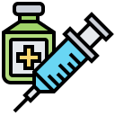

<!DOCTYPE html>
<html lang="en">
<head>
    <meta charset="UTF-8">
    <meta http-equiv="X-UA-Compatible" content="IE=edge">
    <meta name="viewport" content="width=device-width, initial-scale=1.0">
    <link rel="stylesheet" href="css/veterinaria.css">
    <title>Web Personal</title>
</head>
<body>
    
</body>
</html><body>
    <div class="grid">
        <div class="header">
            
            <center>
                <h1>Veterianaria Mis
                    <br> 4 Patas
                </h1>
                <h2>Emergencia las 24 horas</h2>
            </center>
        </div>

        <div class="nav">
            <h3>&nbsp;&nbsp;Inicio</h3>
            <h3>&nbsp;&nbsp;Tienda Virtual</h3>
            <h3>&nbsp;&nbsp;Nosotros</h3>
            <h3>&nbsp;&nbsp;Staff</h3>
            <h3>&nbsp;&nbsp;Servicios</h3>
            <h3>&nbsp;&nbsp;Contactos</h3>
        </div>

        <div class="section">
            <div id="imagen">
                
                <h3>Unidad de Video Endoscopia Diagnostica y Terapética</h3>
                <p>
                    Somos los pioneros, con mas de 12 años de experiencia ofreciendo
                    el servicio de endoscopia diagnostica y terapéutica para caninos,
                    felinos y animales silvestres.
                </p>
            </div>
            <div id="imagen">
                
                <h3>Unidad de Cirugia de mínima invasión Laparoscópica</h3>
                <p>
                    Ofrecemos el servicio de Cirugia de Mínima invasión laparoscópica, a través de un staff de médicos
                    altamento calificados, infraestructura y
                    equipamiento de última generación.
                </p>

            </div>

            <div id="imagen">
                

                <h3>Unidad de Medicina Reproducida y Banco de Semen</h3>

                <p>
                    Contactanos con los últimos protocolos diagnósticos y terapéuticos para el manejo de las
                    enfermedades que afectan el sistema reproductor de nuestars mascotas. Y desde hace dos años, venimos
                    ofrecniendo el servicio de congelamiento de semen, bajo los protocolos de CLONE USA.
                </p>
            </div>


        </div>

        <div class="aside">
            <h1>¿Que <br> Ofrecemos?</h1>
            <br>
            <li>&nbsp;&nbsp;Acumpuntura</li>
            <li>&nbsp;&nbsp;Cirugia General</li>
            <li>&nbsp;&nbsp;Medicina Regenerativa</li>
            <li>&nbsp;&nbsp;Anastésia</li>
            <li>&nbsp;&nbsp;Ortopedia</li>
            <li>&nbsp;&nbsp;Cirugia General</li>
            <li>&nbsp;&nbsp;Nefrologia</li>
            <li>&nbsp;&nbsp;Urología</li>
            <li>&nbsp;&nbsp;Oftalmología</li>
           

        </div>
        <div class="footer">
            <p id="texto">
                Clínica Veterinaria San Diego Copyright © 2017 - 2019. <br>
                Av. General Córdova 885, Santa Cruz - Miraflores T.421 8941 - 997 556 446
            </p>
        </div>
    </div>

<br>
<br>
 <li><a href="Proyectos.html"> REGRESAR A PROYECTOS</a></li>
 <br>
 <li><a href="index.html"> REGRESAR A INICIO</a></li>

</body>
</html>